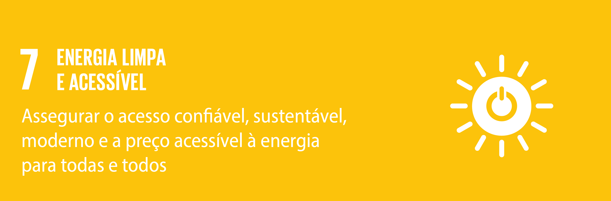

ODS 7: Garantir o acesso a fontes de energia fiáveis, sustentáveis e modernas para todos
O ODS 7 é um chamado global para assegurar que todos tenham acesso a energia que seja acessível, confiável e sustentável. A energia está no centro de quase todos os grandes desafios e oportunidades que o mundo enfrenta hoje, como o desenvolvimento, as mudanças climáticas, a segurança alimentar e a geração de empregos.
Atualmente, cerca de 675 milhões de pessoas ainda vivem sem eletricidade, a maioria em regiões rurais da África Subsaariana. Expandir o 1 acesso à energia renovável e às tecnologias modernas é essencial para melhorar a qualidade de vida e impulsionar o crescimento sustentável.
Por que a energia limpa é importante?
A energia é essencial para o funcionamento das sociedades modernas. Sem eletricidade, escolas, hospitais e empresas enfrentam dificuldades significativas. No entanto, a geração de energia tradicional, baseada em combustíveis fósseis, é responsável por cerca de 75% das emissões globais de gases de efeito estufa.
Investir em energia limpa e acessível reduz a poluição, gera empregos verdes e estimula a inovação tecnológica. Fontes como solar, eólica e hidrelétrica são alternativas sustentáveis que contribuem para o combate às mudanças climáticas e fortalecem a economia local.
De acordo com a ONU, para atingir as metas de 2030, será necessário triplicar o investimento global em infraestrutura de energia limpa, com foco em regiões mais vulneráveis e de difícil acesso.
Metas do ODS 7
- Assegurar o acesso universal, confiável e moderno a serviços de energia até 2030.
- Aumentar substancialmente a participação de energias renováveis na matriz energética global.
- Dobrar a taxa global de melhoria da eficiência energética.
- Reforçar a cooperação internacional para facilitar o acesso a tecnologias de energia limpa.
- Expandir a infraestrutura e modernizar a tecnologia para fornecer serviços de energia sustentáveis, especialmente em países em desenvolvimento.
Este projeto acadêmico se alinha com essas metas ao propor uma plataforma colaborativa que conecta pequenos produtores de energia solar a consumidores locais de Cornélio Procópio, permitindo o compartilhamento e comercialização de energia de forma transparente e sustentável.
A proposta visa criar um sistema digital onde produtores cadastrados possam registrar a energia excedente gerada por seus painéis solares — ou seja, a eletricidade produzida além do que é consumido em suas próprias residências ou estabelecimentos. Essa energia extra, normalmente devolvida à rede pública, poderá ser disponibilizada na plataforma para comercialização direta com consumidores locais.